central nervous system (CNS) = brain + spinal cord
peripheral nervous system (PNS) = else
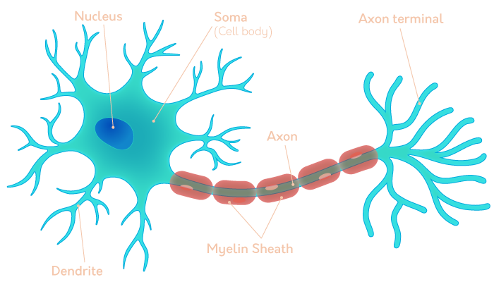
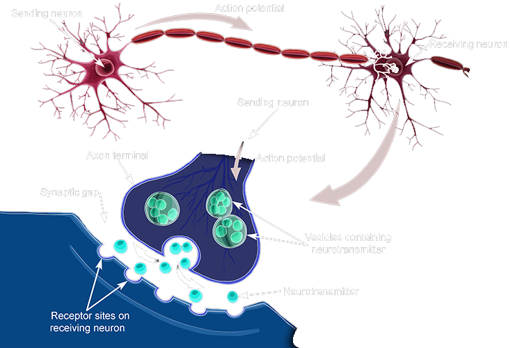
- neurons produce action potential (electical impluse) -dendrite => soma => axon hillock => axon-=> axon terminal => terminal button/synaptic knobs- hillock = beginning of the axon - button = very edge of the terminal - sending neuron: presynaptic - receiving neuron: postsynaptic
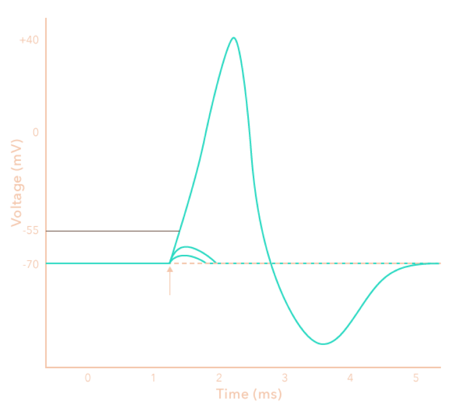
- steps 1. NT binds to a receptor 2. influx to positive ions into to cell body (from NT) 3. open Na+ channels 4. open K+ channels (pumps) - ions produce electrical activity = action potential - normally:-70mV (polarised) - more positive particles = less
polarised = depolarisation - more deplarise = more likely to
activate action potential
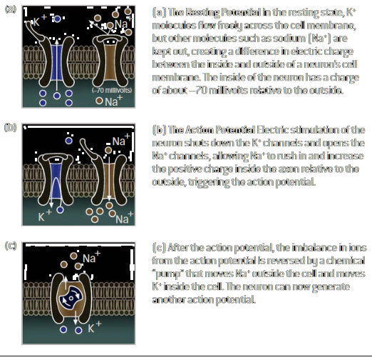
- a: resting, efflux of K+ - b: deplorisation, influx of Na+ - c: repolarisation, exchange - Na+ channel: propagate the AP - K+ channel (pump): maintain resting potential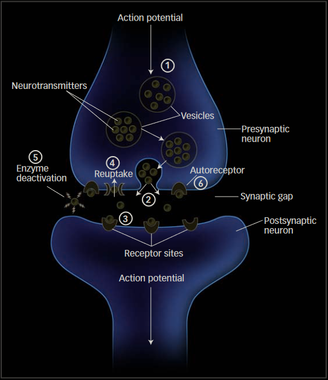
- NT: neurotransmitters (chemicals released from axon terminals) - excitatory: increase the probability of the neuron becoming electrically active - GABA binds its receptor to open a Cl- channel - ⇒ makes cell negative, aka inhibited - inhibitory: decrease - Ach binds ⇒ open Na+ channel - ⇒ makes cell negative, aka excited| Neurotransmitter | Excita/Inhibi tory | Function | Drugs |
|---|---|---|---|
| Glutamate | Excitatory | Learning and movement |
PCP(causes hallucinations)Ketamine(anesthetic) |
| GABA | In | Learning, anxiety regulation through inhibition of neurons |
Valium(used to treat anxiety)Flumazenil(used to reverse anesthesia) |
| Acetylcholine | Ex | Learning, muscle action |
Botox(Botulinum toxin, inhibits release of acetylcholine) |
| Dopamine | Ex/In | Learning, Reward/Pleasure |
Cocaine(prevents reuptake of dopamine, produces euphoria) |
| Serotonin | Excitatory/In | Elevation / depression of mood |
Prozac(prevents reuptake of serotonin, used to treat depression) |
| Norepinephrine | Excitatory/In | Elevation / depression of mood |
Doxepin(used for treating anxiety and depression) |
| Enkaphalins/Endorphins | Ex | Regulation of pain responses |
Opiates(Morphine, Heroin) |
take drug ⇒ natural NT production decreases ⇒ addiction
caretakers of the neuron - maintainance, support, speed up electrical impulses
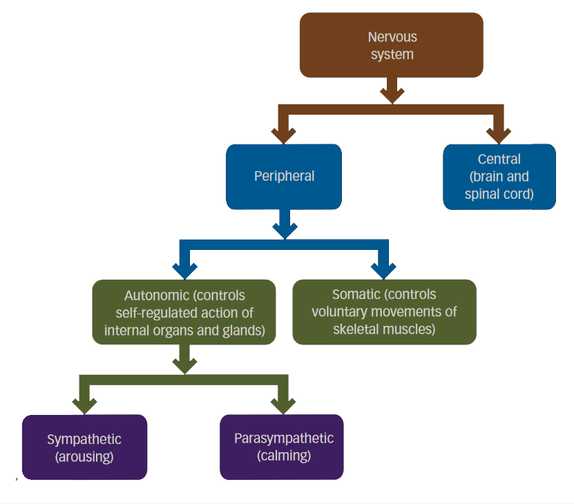
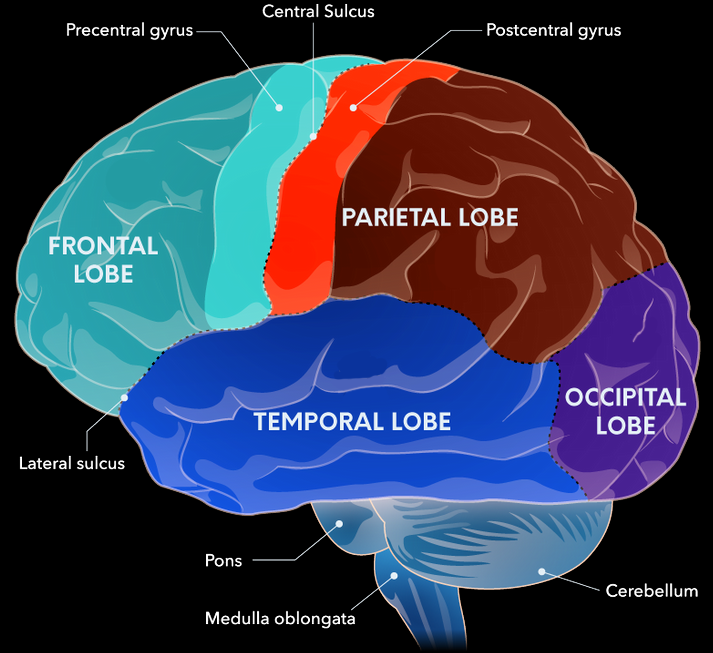
- top - frontal lobe - anterior/front: decision making - posterior/back: movement - precentral gyrus/motor cortex - voluntary movement - postcentral gyrus/somatosenory cortex - touch - parietal lobe - process touch and receive information from visual cortex - help orient in environment - middle - temporal lobe - form memories and process sound - has auditory cortex - occipital lobe - has visual cortex - bottom - pons (bridge) - connect info sent from spinal cord, send info from brain to the body - help regulate arousal, coordinate senses with cerebellum - control facial expressions and eye movements - cerebellum (little brain) - help coordinate movements and problem solving - medulla - regulate life functionsno medulla, no breath, heartbeat, nor swallowing
network of neurons and glia/nuclei/ganglia in the limbic system, basal ganglia, and cerebellum are designed to be modifiers of action and thought
regulate emotions, endocrine activity, form emotional memories
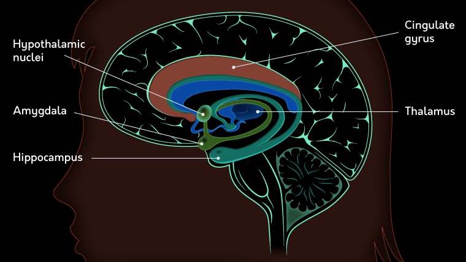
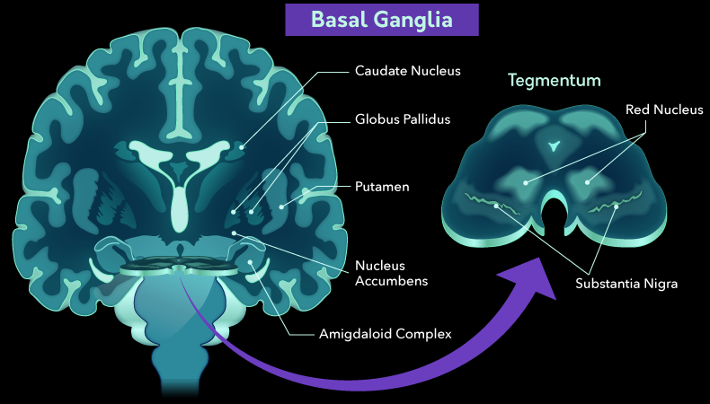
- basal ganglia (telncephalon & diencephalon) - modulate movement commands - increase blood flow and electrical activity when initiating or terminating a movement - help learn to make complex movements more automatic - striatum - inputs to the basal ganglia come in - ventral striatum neurons synapse with axons from the limbic system - help learn movements through practice - get a boost from emotion circuits - globus pallidus and substantia nigra - send inhibitory outputs to the thalamus to help integrate sensory and motor information - internally: a direct pathway - excitatory effect on the thalamus - facilitates the activation of motor plans that are appropriate for the present situation - internally: indirect pathway - inhibitory effect on its targets - heps the basal ganglia shut down motor plans that are not right for the task at hand - Parkinson’s disease: impaired movement - have a hard time initiating and terminating movements - in substantia nigra, the axons secrete dopamine, but in Parkinson’s, these cells die off - cerebellum (metencephalon) (little brain) - rhythm and timing machine - simultaneously receive and organise input from multiple CNS networks - functionally seperated into 3 divisions: - spinocerebellar helps to match sensory input with motor plans to fine-tune movement patterns - vestibulocerebellar processes information from the inner ear to help adjust posture and balance - cerebrocerebellar manage connections with the pons and thalamus to adjust the timing and planning of movementsdifference with our primates: - number of connections in teh neocortex and the area dedicated to the frontal lobes - decision making
the thickness of neocortex makes humans capable of abstract thought
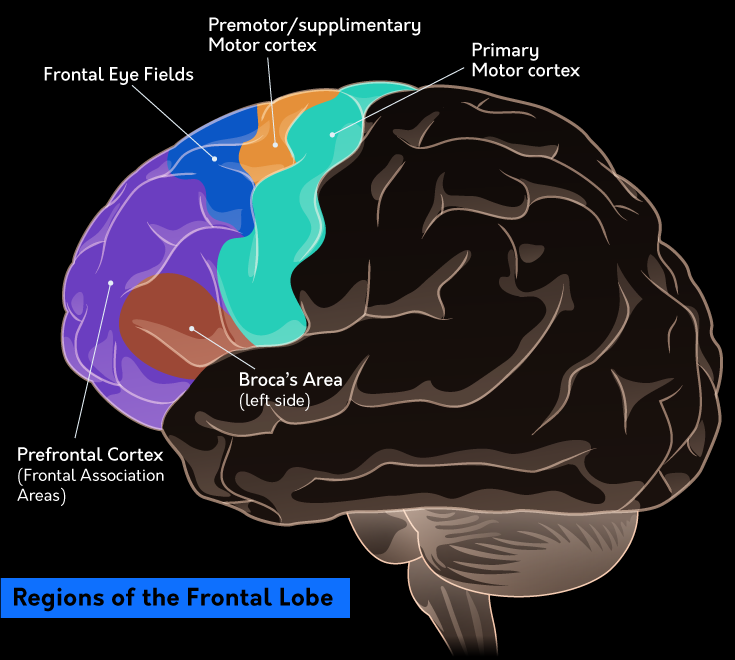
- Phieas Gage - prefrontal cortex destroyed - can’t inhibit behavior - mortor cortex (posterior/back) - primary neurons that initiate voluntary movement - corticospinal tract pathway: control movement of the muscles in the body (spinal) - corticobulbar tract pathway: muscles in the head/face (cobulbar) - prefrotal cortex (PFC) - receive input from all parts of the cerebral cortex - help decide when, why, how we do things - has both inhibitory(hyperpolarising) and excitatory(depolarising) connections - able to integrate information and act as a coordinator - parts - ventromedia PFC (vmPFC) modulates behavior based on fear - dorsolateral PFC (DLPFC) maintains information in our working memoryprocess numebrs and perform calculations - right side: navigate the space - left side: misinterpret sensation
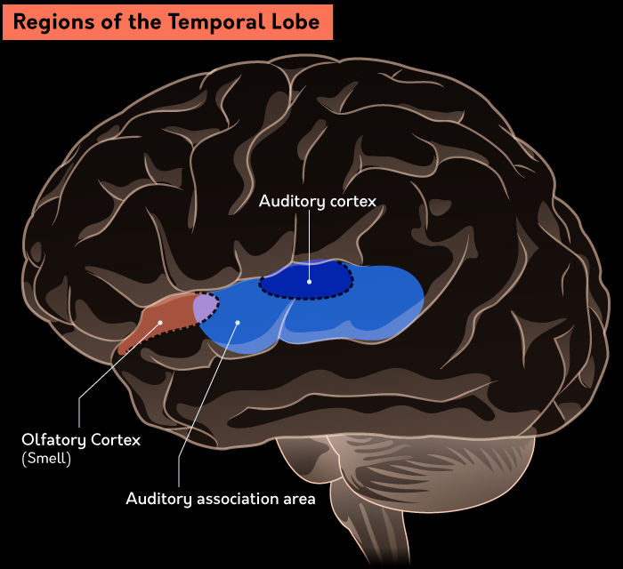
- Wernicke’s area (left temporal lobe) - process language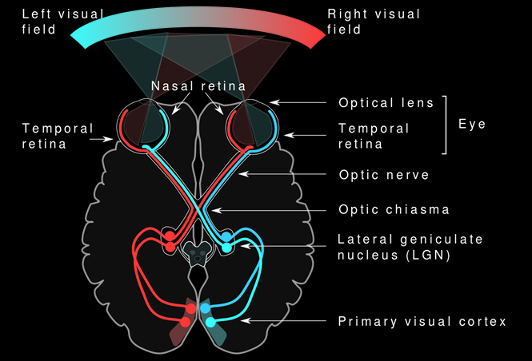
one hemisphere performs different function than the other
connect the two hemispheres and share info
glands that release hormones, have influences on behavior
chronic stress involves hypothalamic-pituitary-adrenal axis HPA Axis secretes hormones to control pituitary gland, which controls the adrenal glands
simple, crude experiments
limitations of machinery/techniques and ethical/ecological reasons
| Method | What Does It Do? | Advantages | Disadvantages | Examples of Use |
|---|---|---|---|---|
| CT Scan (Computerized Tomography) | Uses x-rays that pass through the body, and can generate images of “slices” of the body | Fast, cheap, and noninvasive | Radiation exposure | Detect changes in structure due to disease |
| MRI (Magnetic Resonance Imaging) | Uses magnetic fields to image alignments of hydrogen ions (different tissues have different amounts of water) | Noninvasive, great precision, no radiation | Really expensive, cannot have biomedical devices or metal in patients | Detect changes in structure due to disease |
| fMRI (functional MRI) | Uses magnetic fields to image alignments of hydrogen ions (different tissues have different amounts of water) | Noninvasive, no radiation, no injections or ingestions | Cardiovascular disease or compromised function can make measurements unreliable; delay between stimulus and output | Can measure activation during a task or following stimulation |
| DTI (Diffusion Tensor Imaging) | Tracks and images water movement along neural pathways, and can measure density of neural tracts (bundles of axons) | Noninvasive, no radiation, no injections or ingestions needed | The interpretation can be difficult in tracts that have different kinds of fibers | Study white matter degeneration in disease |
| PET/SPECT (Single Photon Emission Computed Tomography) | Uses an ingested radioactive compound to track molecular changes | You can see molecular changes in real time | Radiation exposure | Visualize the activity of specific neurotransmitters, can measure binding |